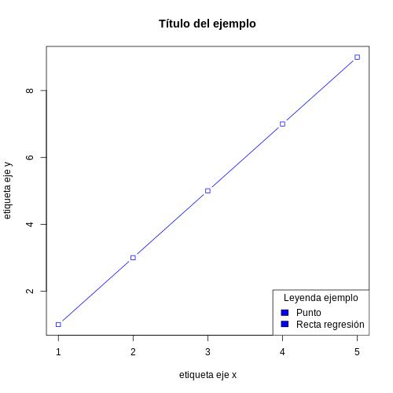
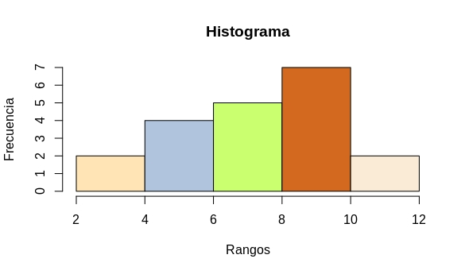

Graficación
R contiene un sistema de generación de gráficas en la biblioteca base de funciones, incluida predeterminadamente en la instalación de R. Si bien, existen otros paquetes interesantes por el salto de calidad o facilidad que ofrecen para la graficación, como ggplot2 o lattice.
La función más básica y general es plot(). En la llamada a la función es imprescindible indicar el eje x para generar una gráfica. El eje y es opcional.
Ambos ejes deben ser vectores que, según el tipo de dato que contengan, se generaría un tipo de gráfico diferente, el cual pueden ser ajustado mediante argumentos que controlan el aspecto, como type (tipo de gráfico), main (título), xlab, ylab (etiquetas de los ejes), col (color) y pch (tipo de puntos).
Los tipos de datos y las gráficas que generarían son:
- Continuo: vector numérico, entero, lógico o complejo.
- Discreto: vector de factores o cadenas de texto.
| x | y | Gráfico |
|---|---|---|
| Continuo | Continuo | Diagrama de dispersión (Scatterplot) |
| Continuo | Discreto | Diagrama de dispersión (coerción numérica) |
| Continuo | Ninguno | Diagrama de dispersión (por renglón) |
| Discreto | Continuo | Diagrama de caja (Box plot) |
| Discreto | Discreto | Gráfico de mosaico |
| Discreto | Ninguno | Gráfica de barras |
| Ninguno | Cualquiera | Error |
Las indicaciones que se pueden realizar en type y pch son muy variadas:
| type= | Tipo de gráfico |
|---|---|
| “p” | puntos |
| “l” | líneas |
| “b” | puntos y líneas seccionadas |
| “c” | sólo las líneas de type=”b” |
| “o” | puntos y líneas |
| “h” | Líneas verticales |
| “s” | función escalera (horizontal a vertical) |
| “S” | función escalera (vertical a horizontal) |
| pch= | Tipo de punto |
|---|---|
| * | * |
| . | . |
| o | o |
| O | O |
| 0 | 0 |
| + | + |
| - | - |
| # | # |
Info
- El tipo de gráfico de puntos y líneas creado por type="b" también se obtiene incluyendo la función
abline()trasplot(), que agregaría la recta de regresión a los puntos incluidos inicialmente. Si bien, puede servir para adicionar rectas diferentes al gráfico. - La cantidad de tipos de punto es mucho mayor ya que, incluyendo números entre el 0 y 25 en lugar de los observados en la tabla, se consigue puntos de diversas formas geométricas pudiendo ser coloreados en su interior.
- La función
curve()crea representaciones a partir de funciones.
Ejemplos
1 2 | |
1 | |
La función legend() permite incluir leyenda al gráfico. Esta función se puede situar dentro de la función que genere el gráfico, siempre al final, e incluye diferentes argumentos como x (ubicación: bottomright, bottom, bottomleft, left, topleft, top, topright, right, center), legend (etiquetas), fill (colores de las etiquetas) y title (título de la leyenda).
Los gráficos creados no pueden ser guardados en el ambiente, sino que es necesario salvar cada gráfico como archivo JPG, PNG, PDF o algún otro tipo, mediante funciones como jpeg(),png() o pdf(), respectivamente, las cuales presentan argumentos como filename (nombre y ruta del archivo), width (anchura de imagen) o height (altura de imagen). Estos dos últimos por defecto en píxeles. Estas funciones se sitúan previo a la creación del gráfico.
Finalmente, se incluye la función dev.off(), que cierra el archivo y permite finalizar el guardado de éste para continuar con otras graficaciones. El resultado puede observase con la función file.show(), incluyendo la ruta del archivo entre comillas.
Info
Los argumentos filename, main, xlab, ylab, x y title requieren comillas para realizar el ajuste.
Ejemplo
1 2 3 4 | |

Gráfico de barras¶
Este tipo de gráfica representa la frecuencia observada de los datos de una variable discreta como barras, una para cada categoría de la variable. La gráfica de barras puede obtenerse a partir de la función plot() si se realiza con un vector de factor o cadena de texto como x y no se incluye y. Sin embargo, la forma de conseguir este gráfico de una forma más simple y directa es mediante la función barplot() que, además ofrece la posibilidad de representar tablas de contingencia, recibiendo como argumento una matriz o una tabla obtenida con la función table().
Ejemplo plot()
1 2 3 | |
Ejemplo plot() de tabla
1 2 3 4 5 | |
Ejemplo barplot()
1 2 3 4 5 6 7 8 | |
Info
- El argumento beside=T permite situar las diferentes barras que componen una categoría de forma paralela en lugar de vertical, es decir, sustituye un gráfico de barras apiladas por apareadas.
- El argumento horiz=T coloca el gráfico de barras horizontalmente.
Cree un script llamado bases_hebras.R que devuelva un gráfico de barras que divida las bases de la hebra introducida y la complementaria.Respuesta
1
2
3
4
5
6
7
8
9
10
11
12
13
14
15
16
17
18
19
20
21
22
23
library("stringr")
hebra_cod <- readline(prompt="Indique la hebra codificante: ")
hebra_molde <- str_replace_all(hebra_cod, c("A"="t", "G"="c", "C"="G", "T"="A"))
hebra_molde <- str_to_upper(hebra_molde)
cadena_cod <- strsplit(hebra_cod,"") [[1]]
cadena_molde <- strsplit(hebra_molde,"") [[1]]
bases_cod <- sort(unique(cadena_cod))
bases_molde <- sort(unique(cadena_molde))
v_hebra_cod <- 1:length(bases_cod)
v_hebra_molde <- 1:length(bases_molde)
for(i in 1:length(bases_cod)){
v_hebra_cod[i]<- str_count(hebra_cod, bases_cod[i])
v_hebra_molde[i]<- str_count(hebra_molde, bases_molde[i])
}
matriz_hebras <- matrix(v_hebra_cod, 1)
matriz_hebras <- rbind(matriz_hebras, v_hebra_molde)
colnames(matriz_hebras) <- bases_cod
rownames(matriz_hebras) <- c("hebra codificante", "hebra molde")
jpeg(filename="bases_hebras.jpg", width = 500, height = 500)
barplot(matriz_hebras, main = "Frecuencia nucleótidos", xlab = "bases", ylab = "cantidad", col = c("blue", "orange"))
legend(x = "topright", legend = c("hebra codificante", "hebra molde"), fill=c("blue", "orange"), title = "Leyenda ")
dev.off()
file.show("bases_hebras.jpg")
Histograma¶
Un histograma es una gráfica muy similar al gráfico de barras, ya que muestra frecuencias de datos. La principal diferencia radica en que muestra el número de veces que se observa el dato en un rango determinado, mientras que el gráfico de barras lo realiza por categoría. Además, el histograma no permite dejar espacios entre las barras. La forma de crear un histograma es mediante la función hist(), la cual requiere un vector numérico como argumento x. El argumento br delimita los rangos si son indicados mediante un vector numérico.
Ejemplo
1 2 3 | |

Cree un script llamado hist_notas.R que devuelva un histograma del conjunto de notas medias de la clase.Respuesta
1
2
3
4
5
6
print("Nota media de los alumnos de la clase: ")
n_medias <- scan()
jpeg(filename="n_medias_hist.jpg", width = 500, height = 500)
hist(n_medias, br= c(0, 1, 2, 3, 4, 5, 6, 7, 8, 9, 10), main = "Histograma notas medias", xlab = "Rangos notas medias", ylab = "Frecuencia de alumnos", col = c("moccasin", "lightsteelblue", "darkolivegreen", "chocolate", "antiquewhite", "springgreen", "steelblue", "tan", "snow", "thistle"))
dev.off()
file.show("n_medias_hist.jpg")
Diagrama de dispersión¶
El diagrama de dispersión muestra la relación entre dos variables numéricas continuas mediante intersecciones entre ellas, por lo que se emplean los argumentos x e y en la función plot() para situar las variables en los ejes de coordenadas. Normalmente, este tipo de gráfico incluye una recta de regresión. Para ello se utiliza la función lm(y~x).
Ejemplo
1 2 3 4 5 6 7 | |
Cree un script llamado recta_calibrado.R que devuelva el diagrama de dispersión y la recta de calibrado de éste.Respuesta
1
2
3
4
5
6
7
8
9
10
11
print("Indique las concentraciones utilizadas (nM): ")
x_conc <- scan()
print("Indique los pH obtenidos: ")
y_pH <- scan()
jpeg(filename="recta_calibrado.jpg", width = 500, height = 500)
plot(x_conc, y_conc main = "Recta de calibrado", xlab = "Concentración (mM)", ylab = "pH")
r_calibrado <- lm(y_pH~x_conc)
print(r_calibrado)
abline(r_calibrado, col="blue")
dev.off()
file.show("recta_calibrado.jpg")
Diagrama de caja¶
El diagrama de caja es una gráfica que incluye un rectángulo cuya base inferior es el cuartil 1 (Q1, 25% de los datos) y la base superior el cuartil 3 (Q3, 75% de los datos). El intervalo entre Q3 y Q1 se conoce como rango intercuartílico (RIC). La división de este rectángulo corresponde al cuartil 2 o mediana (Q2, 50% de los datos). Además, incluye una línea que indica el rango de valores no atípicos, es decir, superiores a Q1–1.5·RIC o inferiores a Q3+1.5·RIC. Los puntos que sobresalen de estos límites son los valores atípicos.
Este gráfico tan representativo se obtiene mediante la función boxplot(). Para ello se necesita precisar la variable continua que se grafica y la variable que se emplea para agrupar, esto es, y y x mediante formula = y ~ x.
Ejemplo boxplot()
1 2 3 | |
Cree un script llamado notas_grupos.R que genere un gráfico de cajas que compare las notas medias de dos grupos de clase distintosRespuesta
1
2
3
4
5
6
7
8
9
10
11
12
13
print("Indique el número de alumnos: ")
n_alumnos <- scan(n=1)
v_notas <- 1:n_alumnos
v_grupos <- 1:n_alumnos
for(i in 1:n_alumnos){
v_grupos[i] <- readline(prompt="Indique el grupo: ")
print("Nota media del alumno correspondiente: ")
v_notas[i] <- scan(n=1)
}
jpeg(filename="notas_grupos_boxplot.jpg", width = 500, height = 500)
boxplot(formula = v_notas ~ v_grupos, main = "Notas medias de los grupos de clase ", xlab = "Grupos", ylab = "Notas", col = c("grey", "seagreen"))
dev.off()
file.show("notas_grupos_boxplot.jpg")
Gráfico de sectores¶
El gráfico de sectores, también conocido como diagrama de pastel o tarta, es un gráfico circular que se emplea para representar porcentajes y proporciones. Su creación se lleva a cabo mediante la función pie() que recibe como argumento principal un vector (o tabla) con las frecuencias absolutas de cada clase. Se utiliza el argumento labels para cambiar las etiquetas de cada sector. Para ello toma un vector de cadenas de caracteres.
Ejemplo
1 2 3 | |
Cree un script llamado frecuencia_bases.R que devuelva un gráfico de sectores sobre el porcentaje de bases de la cadena de ADN indicada.Respuesta
1
2
3
4
5
6
7
8
9
10
11
12
library("stringr")
cad_adn <- readline(prompt="Indique la cadena de ADN: ")
cad_split <- strsplit(cad_adn,"") [[1]]
cad_sort <- sort(unique(cad_split))
v_f_cad <- 1:length(cad_sort)
for(i in 1:length(cad_sort)){
v_f_cad[i]<- str_count(cad_adn, cad_sort[i]) / length(cad_split)
}
jpeg(filename="pastel_f_bases.jpg", width = 500, height = 500)
pie(v_f_cad, label=cad_sort, col=c("red", "blue", "green", "yellow"), main="Frecuencia de bases")
dev.off()
file.show("pastel_f_bases.jpg")
Graficación avanzada con ggplot2¶
Como se ha comentado al inicio, existen varios paquetes que incrementan la calidad de los gráficos y pueden facilitar el acceso a los datos a graficar. Entre ellos destacan ggplot2 o lattice, empleados para graficar con data frames de un modo avanzado. Este apartado se centra únicamente en introducir al alumno en el uso de ggplot2, contenido en la librería tidyverse, ya que es el más extendido de los dos. Ambos son muy similares y se solapan en funcionalidades, si bien, ggplot2 es más reciente que lattice. Para entender su funcionamiento se va a utilizar uno de los ficheros utilizados en Importación y exportación de datos: csv_tutorial.csv.
1 2 | |
La función básica de ggplot2 para generar un gráfico es ggplot(). Atendiendo al contenido del objeto al que se le emplee la función, se producirá un determinado tipo de gráfico. No obstante, ggplot() permite aplicar internamente la función aes(), lo que en la terminología de este paquete se refiere a estéticas, es decir, color, distancia horizontal o vertical, forma o tamaño del punto, etc.
Estas estéticas se asocian a columnas de datos, de modo que se establezcan según la columna asociada. La forma de representar los datos y las estéticas se indican por lo que se conoce como capas en la terminología de ggplot2. Las capas, como se deduce de su nombre, pueden superponerse. Esto es posible ordenándolas como si de una suma se tratase. Existe una gran cantidad de capas, aunque las más usuales son las referidas a gráficos estudiados durante esta sección, como geom_point(), geom_line(), geom_histogram(), geom_bar() o geom_boxplot. Aquí puede consultar una lista de las capas disponibles. Como ocurre con R base, cada tipo de gráfico, en este caso capa, exige que las variables sean continuas o discretas atendiendo a lo que representa.
Ejemplos
1 | |
1 | |
1 | |
1 | |
Las estéticas del gráfico puede ser modificadas de forma que aparezca el título y las etiquetas deseadas. Para ello se emplean las funciones ggtitle() y labs(), respectivamente.
Ejemplo
1 | |
Otra de las características resaltables de ggplot2 es su capacidad para presentar gráficos conjuntos que hayan sido divididos respecto a diferentes categorías de una variable. Además, ofrece la posibilidad de cambiar de tema, es decir, el aspecto estético del gráfico que no tiene que ver con los datos. El paquete contiene diversos temas básicos, pero se pueden instalar librerías que expandan el número con temas más específicos, como el paquete ggthemes. Las diversas herramientas que ofrece ggplot2 hacen que la calidad de gráfico que permite crear sea increíble, muestra de ello se puede observar en diversas webs ofrecidas en los enlaces de interés.
Ejemplos
1 | |
1 | |
1 | |
Finalmente, el gráfico creado se puede exportar a un archivo de extensión PNG, JPG u otros tipos si se indica el formato en el nombre del archivo dentro de la función ggsave().
Ejemplo
1 | |
Ejercicio resumen
El archivo graf_resumen.Rmd contiene un ejercicio de graficación sobre el conjunto de datos DNase disponible de R, el cual se asemeja a los datos que el alumno puede recoger en una típica práctica del Grado. DNase se carga directamente introduciendo dicho nombre entre comillas en la función data(). Además, incluye otro ejercicio sobre los siguientes datos de una clase: clase_resumen.csv. De esta manera se pretende resumir de forma explicativa lo estudiado en este apartado, por lo que requiere la instalación de la biblioteca tidyverse.
Ejemplo complementario: boxplot básico con lattice
1 2 3 4 | |
Enlaces de interés
-
Material del curso Informática aplicada a la Bioquímica. Manuel Jesús Marín Jiménez, Universidad de Córdoba.
-
Nociones generales sobre R. M. Vargas, Universidad de Granada.
-
R para profesionales de los datos: una introducción. Carlos J. Gil Bellosta.
-
Ejemplos de gráficas Ggplot2 con tema personalizado. El Blog de pmoracho